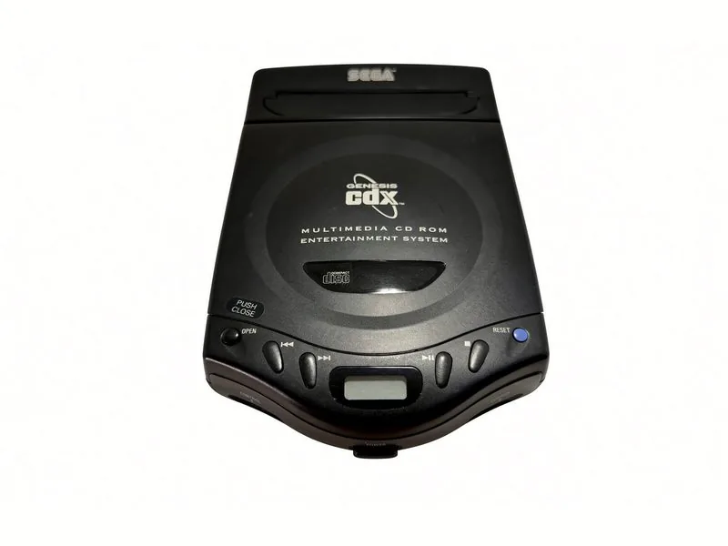

Genesis CDX
A Genesis and a Sega CD in one slim 1994 box, running on a replaced laser lens.
The CDX put a Genesis and a Sega CD in one box barely bigger than a portable CD player, and it doubles as one, with a small display for audio discs. It plays Genesis cartridges on top and Sega CD discs under the lid.
Like every Genesis, it carries RGB on its AV port from the factory, so it needs no mod to reach the monitors: a Genesis 2 style RGB SCART cable into the switcher, a SCART to 4 BNC breakout out of it, and a Sony at the end.
The weak point on any CD system is the laser. This one’s has been replaced, and two more of the same Sanyo pickup sit on the shelf for the next time.
What it puts out, and how it gets to the glass
- Video out
- RGB (native)
- Modification
- None needed
- Into the chain
- RGB SCART → switcher → breakout → PVM / BVM
- Media
- Genesis cartridges, Sega CD discs, audio CDs
- Laser pickup
- Sanyo SF-C93AQ (replaced)
- Power
- OEM MK-4122 supply
Work log
What has been done to it.
- Laser lens replaced — A new pickup, so discs read cleanly again.
- Spare pickups on the shelf — Two more SF-C93AQ lasers, kept for later.
- Family
- Sega Genesis + Sega CD — 16-bit, 1989 and 1992 in North America
- Model
- MK-4121 — 1994, the combined unit
- Status
- Serviced — Wired into the RGB chain.
The console mod table lists every machine’s path to the monitors, and The Signal Chain walks it box by box.